Le système de highline et les ancrages
La Highline comprise comme un système
Norme ISA 21 : Highline System
Racourcis vers les chapitres du Cahier Technique Highline FFCAM :
Chapitre 1 : Recommandations pour l’encadrement de la pratique de la highline
Définition de la Highline
Activité sportive qui consiste à évoluer sur une sangle textile tendue entre deux points d’ancrage à une hauteur permettant de tomber en sécurité (à considérer au regard de la configuration du site). Cela au moyen de matériel adapté auquel le pratiquant est attaché directement sur l’installation en assurage autonome. Cette discipline est principalement une activité de plein air qui se déroule en montagne et dans d’autres sites appropriés (forêt au relief propice, ou dans des carrières, falaises en bord de mer, etc). Elle peut aussi se dérouler dans des salles, à condition que les principes de sécurité puissent être respectés, et que les ancrages soient fiables. Les forces créées ne doivent pas engendrer de déformation de la structure.
En plus d’une sangle principale sur laquelle le pratiquant évolue, une sangle secondaire nommée backup, liée à la sangle principale sert de ligne de vie en cas de rupture. Le pratiquant est assuré par une longe de sécurité, le leash, liant son baudrier à des anneaux placés autour des deux sangles. L’installation peut faire appel à des techniques utilisées dans les milieux de l’escalade et de l’alpinisme, voire du levage mais reste très spécifique à la highline.
La highline est en elle-même un système, et à ce titre, l’ISA (Association Internationale de Slackline) s’est efforcée de définir et de décrire une norme des éléments minimaux qui composent ce système, selon les normes de sécurité que l’on cherche à diffuser et à garantir dans la discipline. Sur le plan graphique, ce système se résume ainsi :
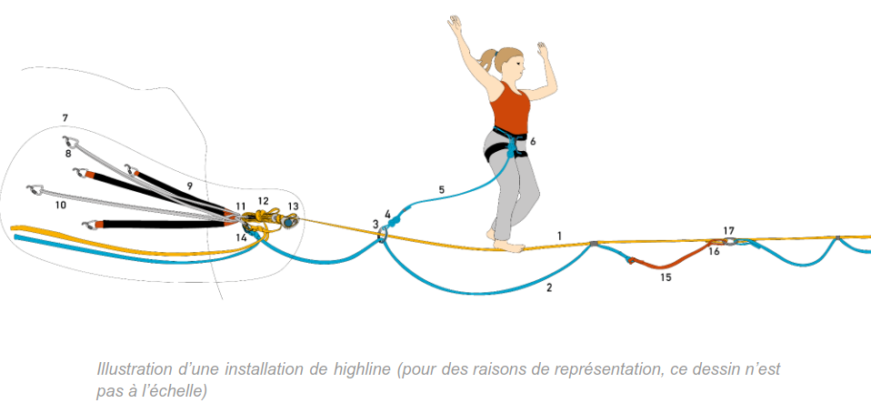
Légende :
- 1. Sangle principale
- 2. Sangle de secours ou backup
- 3. Anneaux
- 4. Noeud de huit
- 5. Leash
- 6. Baudrier
- 7. Ancrage
- 8. Amarrage et connecteur
- 9. Triangulation et gaines de protection
- 10. Backup de triangulation
- 11. Point principal ou master point
- 12. Lasso
- 13. Bloqueur de sangle ou banana et noeud antislip
- 14. Backup général
- 15. Rallonge de backup (optionnel selon la configuration de l’installation)
- 16. Boucle cousue
- 17. Fractionnement ou jonction de sangles (optionnel selon la configuration de l’installation)

Nous allons maintenant voir un par un les éléments de base pour comprendre le système et les pièces utilisées en situation réelle.
Sangles (Webbing)
La Mainline est la sangle utilisée par l’athlète, ou « highliner », pour marcher et jouer ; le "Backup" est la sangle qui sécurise le highliner en cas de rupture de la mainline, c’est-à-dire la redondance qui s’activera en cas de défaillance de la sangle principale !
Backup :
Dans son utilisation active, le backup constitue une ligne de vie secondaire, indépendante de la sangle principale. Elle assure la redondance de l'installation. Souvent formée par une sangle, les fabricants de matériel conseillent d'utiliser une corde semi-statique qui est un dispositif normé équipement de protection individuelle, EPI car les sangles de highline ne le sont pas, et ne doivent pas être considérées comme un équipement de protection. Même en prenant cette précaution, il faut savoir que ces cordes répondent à des tests qui ne correspondent pas à l'utilisation qu'il en est fait en highline.
Dans son utilisation passive, le backup évite que la sangle principale et la ligne de vie entrent en résonance (augmentation de l'amplitude d'oscillation sous l’effet du vent principalement, ce qui peut devenir incontrôlable et endommager le dispositif).
Les sangles utilisées en highline ne sont pas certifiées EPI.
Pour les grandes longueurs de sangle ou pour limiter la longueur de chute lors d'un "backupfall" il est fréquent d'utiliser des setups fractionnés, on connecte alors ensemble plusieurs brins de sangle en connectant la main et le backup à l'aide de 2 connecteurs ( maillons rapides ou manilles textiles) voir:
C’est le matériau avec lequel n’importe quel slackliner sera le plus familier ; cependant, pour un usage en highline, il doit répondre à certaines caractéristiques.Il existe plusieurs types de sangle avec une masse linéique, une élasticité, une résistance, une matière et un type de tressage des fibres différents.
Polyamide ou nylon (PA, NY): Sangle la plus élastique, courbe d’élasticité exponentielle. Elle est rarement tendue sur des lignes d’une distance supérieure à 200 mètres.Les plus élastiques et les moins resistantes, convient aux lignes courtes ou de freestyle principalement. Très sensibles aux UV et Arbrasion.
Polyester (PET) : Élasticité comprise entre 2 % à 12 %. Relativement facile à tendre car peu élastique. L’utilisation de ce type de sangle est déconseillée sur des distances inférieures à 70 mètres, elles sont plus resistantes à l’usure et moins élastiques, confortables à la foi pour marcher , surfer ou bouncer selon les longueurs et modeles.
Hi-Tech Dyneema et hybrides (PES, UHMPE)(ou sangles à ultra-faible élongation) : Très légères et très résistantes et tres faible elasticité, réservées à des lignes de 150m ou plus ou des systèmes spécifiques de haute performance en freestyle utilisées avec des bungees (non détaillé ici) Sangles qui ont peu de pouvoir absorbant lors des chocs. Ces sangles étant particulièrement glissantes, il faut porter une vigilance au passage dans le banana et pour la tension avec un linegrip. On préfèrera utiliser un segment d’une sangle constituée d’un autre matériau pour le passer dans le bloqueur de sangle pour éviter ce phénomène. Il est par conséquent conseillé de ne pas les utiliser sur des longueurs inférieures à environ 150 mètres.
→ Les sangles tubulaires : À la différence des sangles plates, les fibres des sangles tubulaires sont tissées en rond, ce qui en fait des sangles plutôt douces.
Durée de vie des sangles :
La durée de vie des sangles dépend des conditions dans lesquelles elles sont utilisées et stockées. La résistance des sangles diminue selon le temps d’installation, l’exposition aux UVs, au vent et au type de pratique (contrainte supplémentaire en freestyle). Il est important de contrôler régulièrement l’état de la sangle en contrôlant la pigmentation et la texture, qui peuvent être les premiers signes visibles d’usure. Des études ont été réalisées par l'ISA, les recommandations par type de sangles sont disponibles sur son site via ce lien .
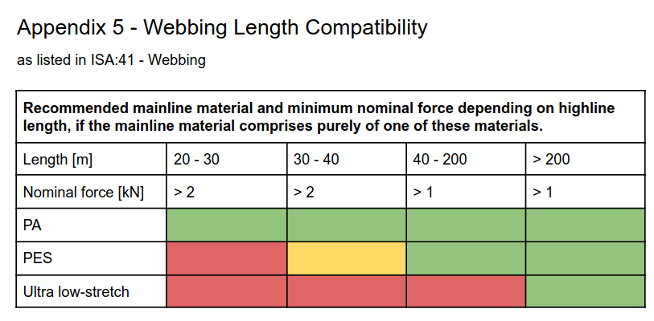
L’ISA établit aussi une classification des sangles selon leur résistance, directement liée à leur durée de vie face à l’exposition aux radiations UV :
Type A+ : résistance supérieure à 40 kN (MBS) ; c’est la sangle qui aura la plus longue durée de vie, car malgré la résistance qu’elle perd avec les radiations, elle conserve un grand facteur de sécurité.
Type A : résistance supérieure à 30 KN (MBS) et jusqu’à 40 KN ; utilisable sur n’importe quel highline, avec une longue durée de vie.
Type B : résistance supérieure à 26 kN (MBS) et jusqu’à 30 kN ; ce sont normalement des sangles où l’on échange de la résistance contre de la légèreté ; utilisables avec précaution dans la plupart des scénarios, avec une durée de vie intermédiaire.
Type C : résistance supérieure à 22 kN (MBS) et jusqu’à 26 kN ; ce sont des sangles a trés courte durée de vie et généralement moins résistantes à l’abrasion ; leur usage n’est recommandé qu’à des riggers expérimentés et dans des situations contrôlées.
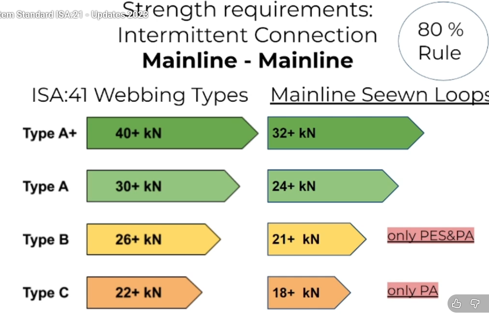
L’ISA formule aussi une recommandation de durée de vie utile des sangles en fonction de leur résistance et du matériau dans lequel elles sont fabriquées ; cette durée correspond au temps d’exposition au rayonnement UV, c’est-à-dire uniquement le temps passé à l’extérieur, qu’elles soient utilisées ou non ; on compte ce temps car les sangles perdent de la résistance à cause de l’exposition au soleil et de la détérioration du matériau :
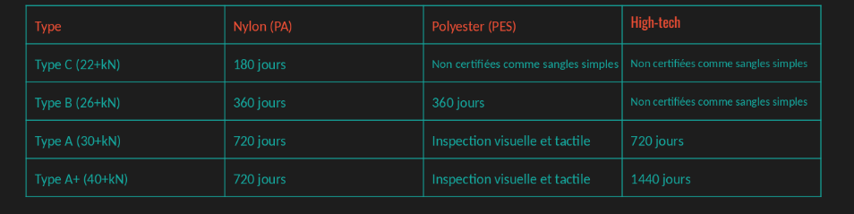
Un autre standard de l’ISA pertinent pour les sangles concerne les boucles cousues, ou sewn loops ; ces boucles sont très courantes et utiles en highline et en rigging. Pour être considérée comme sûre, toute boucle cousue doit résister à au moins 80 % du MBS de la sangle sur laquelle elle est cousue. C’est-à-dire que pour une sangle qui résiste à 30 kN, sa boucle cousue devrait résister à au moins 24 kN
Il existe aussi des coutures permetant de fractionner à l'aide de t loop , dura la vida ou X stich. Les boucles cousues ne sont pas des EPI.
Dans le cas de fractionnements des sangles (appelés fractio), la couture réduit la résistance de la sangle principale entre 5 et 15%, selon le type de sangle et de couture. La boucle cousue permet d’attacher directement la sangle dans les connecteurs et de connecter des portions de sangles entre elles
→ Le principe du fractionnement :
Le principal avantage à effectuer un fractionnement de la highline est de limiter la hauteur de chute du pratiquant en cas de rupture de la sangle principale, limitant ainsi les forces en jeu sur les ancrages et sur le corps. Dans ce cas de figure, plusieurs brins de sangle sont assemblés grâce à des connecteurs (maillons rapides ou manilles textiles) pour constituer la highline.
Ainsi, en cas de rupture d’une des portions de la sangle principale, une seule portion de backup entre en jeu. La préconisation de hauteur minimum de la highline est la moitié de la longueur de la ligne (à ajuster en fonction du terrain, de la tension et de la sangle) sans utilisation de fractionnement.
Plus les longueurs de sangle entre fractionnements seront courtes, plus la hauteur de chute en cas de rupture de la sangle principale sera diminuée.
→ Monter une highline avec des fractionnements, exemple type : maillon rapide et manille textile :
Pour cela, utiliser un maillon rapide inox ovale dont la charge de travail est au moins égale à la charge de rupture de la sangle principale. En redondance de ce maillon rapide, une manille textile dont la longueur est adaptée à la taille du maillon rapide est mise en place. La manille doit être prétendue, et positionnée convenablement ce qui a pour effet de limiter le risque d’ouverture de la manille hors charge.
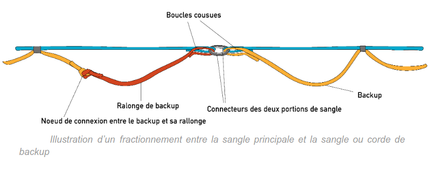

exemple :setup freestyle modulaire BC, connecteurs non représentés
La résistance des sangles étant relative à la composition et à l’usage, il est bon de se référer aux recommandations du fabricant quant à leur durée de vie respective et de suivre le nombre de journées d’utilisation des sangles.
‣ Forces en jeu
Utilisation classique 300 kg dans la ligne principale en tension à vide.
Scotcher les sangles
Pour terminer ce sujet, il faut mentionner que l’usage du tape/scotch est important dans la pratique de la highline.
C’est le consommable utilisé pour maintenir ensemble la mainline et le backup, créant des boucles de tailles diverses qui donnent aux highlines leur apparence caractéristique, Ces boucles servent à stabiliser la sangle face à son mouvement dû au vent.
Maintenir les sangles ensemble évite que le vent ne génère des résonances dangereuses.
Le tape se pose de manière à ce que l’une des deux sangles (mainline ou backup) puisse glisser sur l’autre.
Il n’existe pas de standard concernant le tape car ce sont des consommables à très faible résistance ; il faut toutefois tenir compte de sa qualité, des résidus qu’il peut laisser sur les sangles et des déchets qu’il génère.
→ Pourquoi scotcher ?
Scotcher la sangle principale à la sangle de backup permet de diminuer les effets du vent sur la ligne principale car les boucles créées stabilisent la ligne et lui évitent de rentrer en résonance.
Exemple : sur une ligne de 100 m, prévoir de scotcher tous les 4 à 6 mètres de manière aléatoire.
→ Comment scotcher : principale (main) ou secondaire (backup) coulissante ?
Positionner ses scotchs de manière à ce que l’une des deux sangles puisse coulisser sans impacter l’autre permet d’équilibrer la répartition (et la tension) du backup naturellement sur toute la longueur de la ligne. Cela réduit aussi le risque de casser les scotchs quand les sangles bougent.
・ backup coulissant
Le scotch est enroulé autour de la ligne principale ce qui crée une partie non adhésive sur le scotch autour de la ligne de backup qui coulisse à travers le scotch immobile de la sangle principale.
Avantage : le fait que les lignes soient séparées par une couche de scotch permet d’éviter l’abrasion entre les deux sangles.
Inconvénient : les boucles de backup peuvent se former de manière irrégulière et moins ajustable que main coulissante.
・ main coulissante
C'est l’inverse : le scotch est enroulé autour du backup, ce qui lui permet de coulisser sur la sangle principale.
Avantage : les boucles de backup sont ajustables facilement car la sangle qui coulisse est en tension
Inconvénient : si un scotch casse, alors la boucle générée est plus lourde et tire toutes les autres vers elle (en pratique c’est moins le cas en backup coulissant).
→ Les coutures en remplacement des scotchs
La ligne principale et la ligne de backup sont cousues l’une à l’autre.
Avantage : pas de risque de perdre des scotch, sécurité accrue en cas de vent fort.
Inconvénient : impossible d’ajuster les boucles de backup et de changer la configuration de l’installation.
Leashes et anneaux
Les Anneaux (ou l’Anneau) sont le connecteur métallique utilisé pour fixer le Leash aux deux sangles (mainline et backup), qui passent a travers.
Le Leash est la corde de vie qui relie l’athlète à la highline par le baudrier et les anneaux.
-
Le leash est composé d’une corde dynamique répondant aux exigences de la norme NF EN
892 + A2:2021. Cette corde est elle-même gainée par une sangle tubulaire. Les leash sont
vendus en état d'utilisation ou peuvent être assemblés par le pratiquant.
Cet élément assure le pratiquant lors de son évolution sur les sangles. Sa longueur peut
varier entre 320 à 450 centimètres.
Une fois la session terminée, il faut attacher le leash à l’ancrage pour ne pas qu’il glisse vers
le milieu de la ligne et qu’il n'entraîne pas de frottements sur les autres éléments en cas de
vent.
Les anneaux ne sont pas certifiés comme étant des EPI. Plus le diamètre intérieur de l’anneau est grand, plus il sera facile de passer les connexions des lignes fractionnées (ex : 80 millimètres). Il est préférable d’utiliser une paire d’anneaux pour la redondance, scotchés entre eux. Le fait d’avoir deux anneaux augmente la surface en contact avec la sangle et semble limiter l’usure prématurée des sangles.
Attention à l'utilisation d’anneaux « lourds » (> 200 grammes), qui peuvent causer des blessures dûes à leur poids lors d’un contact pendant l’utilisation.
Anneau acier : Ces anneaux d’un seul tenant sont à utiliser par paire : scotcher les deux anneaux de taille identique ensemble. Certains anneaux en acier sont conçus pour une utilisation comme anneau simple et non par paire : se référer aux recommandations du fabricant. Illustration de deux anneaux acier joints par du scotch
Anneaux alu : Les anneaux en aluminium conservent leur forme (l’anneau en acier qui lui est ductile peut se déformer) mais aura une rupture nette sans signe avant coureur. Certains anneaux en alu sont conçus pour une utilisation comme anneau simple et non par paire : se référer aux recommandations du fabricant.
Anneaux ouvrables en aluminium: Les anneaux ouvrables permettent d’être installés directement sur une highline déjà installée. Ils sont particulièrement légers. Dans la mesure où c’est le nœud du leash qui fera l’efficacité du dispositif, il est impératif d’y être vigilant et de respecter les recommandations du fabricant.
Remarque : un fabricant propose un anneau en usage simple constitué de titane.
Les anneaux de highline sont normalement en aluminium.
Le standard de l’ISA indique que leur résistance doit être de 24 kN (MBS), ce qui peut s’obtenir avec
Les différents types d'anneaux de leash :
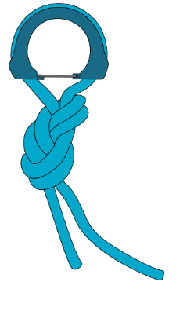
Illustration d’un anneau ouvrable en aluminium et leash noué.
un anneau simple ou un anneau double.
Chaque anneau doit subir un test de charge à 6 kN
Le poids maximal de chaque anneau doit être de 150 g; c’est pourquoi l’usage d’anneaux en acier n’est plus recommandé, car ils peuvent provoquer des blessures en heurtant l’athlète.
Leash :
Dispositif d’assurage constitué de corde dynamique (norme EN 892) entourée d’une gaine tubulaire reliée aux sangles par des anneaux d’un côté, et au baudrier de l’autre côté. La gaine sert à préserver la corde qui est à l'intérieur.
Le leash doit être composé au minimum d’une corde dynamique ou semi-statique certifiée pour l’escalade, d’au moins 9 mm de diamètre.
On utilise normalement une gaine de sangle tubulaire pour lui donner plus de protection et pour qu’elle soit plus confortable à saisir au moment de remonter.
Le nœud recommandé pour relier le leash aux anneaux et au baudrier est le huit double tissé.
Leashfall :
Désigne la chute sur la highline lors de laquelle le pratiquant est retenu par son leash qui l’assure, on peut dire qu’il « tombe dans son leash ».
Le nœud en huit du leash doit être tissé sur les deux points d’attache du baudrier et non sur l’anneau ventral.
Le leash est l’un des points du système qui ne dispose pas de redondance ; il est donc important d’en inspecter continuellement l’état.
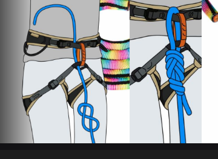
Bloqueurs de sangle (Weblocks, connecteurs et Masterpoint)
Le Masterpoint est le point où se rejoignent les cordes et sangles d’ancrage et les connecteurs de blocage de sangle. C’est le point où se réunisse les différents systèmes de redondance. Tous ses éléments doivent être redondants.
Pour bloquer la sangle principale on utilise un Banana ou weblock du côté de la tension. Du côté statique on utilisera les boucles cousues avec une manille si elles sont disponibles. En l’abscence de boucles cousues certifiées on utilisera un second weblock.
Banana (ou weblock) :
Bloqueur de sangle permettant de ravaler une sangle à l'infini dans un sens et de la bloquer dans l'autre. Cet élément de l’installation permet de relier la ligne principale à l'ancrage. En highline, il nécessite obligatoirement un nœud d'arrêt car il peut laisser glisser la sangle.
Le banana n’est pas un EPI.
Il s’agit d’un bloqueur de sangle par friction ou weblock : il permet de la bloquer dans un sens mais pas dans l'autre, ce qui permet d'ajuster la longueur de la sangle qui constituera la highline. La diminution de résistance de la sangle varie d’un banana à l’autre, selon le diamètre de l’axe central : plus le rayon de courbure de la sangle sera faible, et donc la résistance résiduelle élevée : se référer aux recommandations du fabricant. Préférer les banana avec des gros axes centraux.
S’il peut être utilisé avec plusieurs connecteurs, le plus utilisé est la manille.Les weblocks peuvent se présenter dans une infinité de formes, constructions et tailles, mais Ils suivent en général une structure similaire à celle représentée ci-dessous.
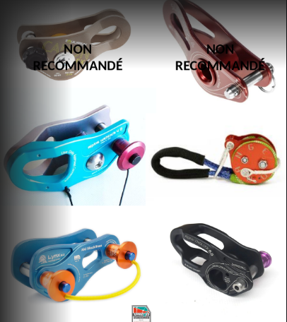
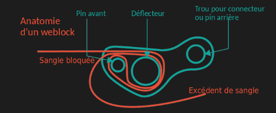
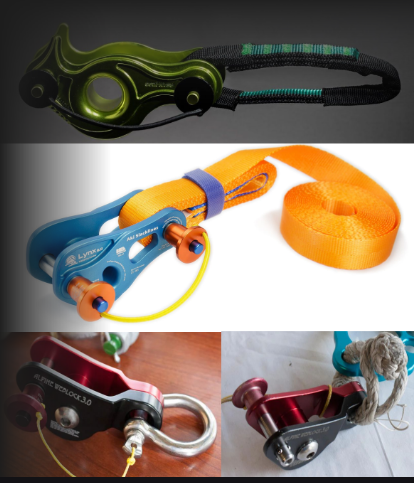
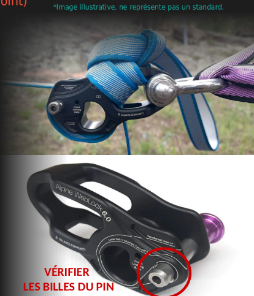
La résistance minimale d’un weblock doit être de 48 kN (MBS) pour être certifié par l’ISA.
Les weblocks permettent de bloquer la sangle en conservant la majeure partie de sa force de rupture ; ils fonctionnent aussi comme un dispositif de capture de progression de la sangle.
Tous les weblocks sont susceptibles de laisser glisser la sangle sous tension ; c’est pourquoi il est important, chaque fois qu’on les utilise, de faire un nœud antiglisse avec l’excédent de sangle appelé “Antislip”.
Ils peuvent être en aluminium ou en acier, mais en général, il n’est pas recommandé d’utiliser un weblock en tôle pliée car cela crée une faiblesse structurelle du matériau
Les weblocks a double pin sont concus principalement pour étre connectés directement au soft-release.
Ils peuvent aussi être utilisés avec des connecteurs souples en sangle ou elingues qui occupent tout l’espace du pin et conservent une résistance minimale de 48 kN et ne doivent pas être utilisés avec une simple manille textile.
Ne jamais connecter les weblocks à double pin directement à l’ancrage ou à des connecteurs, et éviter à tout prix les charges triaxiales sur les pins.
Les Weblocks avec trou pour connecteur doivent être utilisés avec des connecteurs d’une résistance minimale de 48 kN, qui peuvent étre des manilles ou des mallies textiles; ne jamais utiliser de mousquetons.
Certains weblocks sont conçus de manière à pouvoir être utilisés avec un connecteur ou directement tissés avec un soft release.
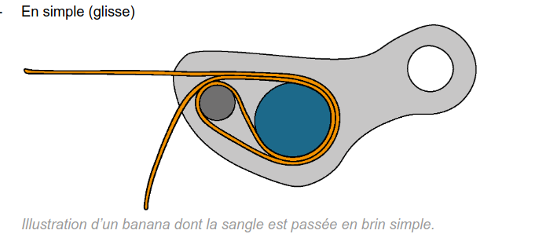
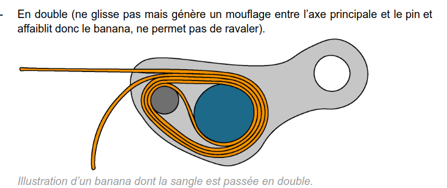
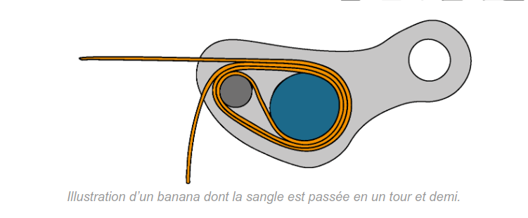
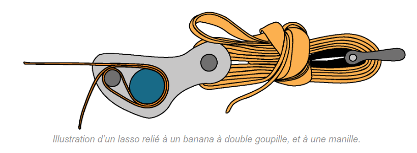
Tous les weblocks sont susceptibles de laisser glisser la sangle sous tension , c’est pourquoi il est important toujours, TOUJOURS, TOUJOURS de faire un nœud antiglisse avec l’excédent de sangle.
Ce nœud peut varier légèrement selon le type de weblock et la configuration utilisée ; l’apprendre dépasse le cadre de cette présentation : consulter les recommandations du fabricant et de l’ISA.
Antislip
- Il est également important de toujours, TOUJOURS vérifier que le pin passe complètement et que les billes ressortent bien pour le bloquer.
Pour le blocage de sangle du backup, il existe des options un peu plus économiques, comme le Mightylock de Balance Community ; il doit être utilisé avec un shackle en acier et conserve 85 % de la force de la sangle.
- Manuel Mighty lock PDF
Il n’est pas recommandé d’utiliser des nœuds pour connecter le backup, et encore moins pour la mainline !
Sur les côtés statiques, on pourra utiliser des boucles cousues combinées à un connecteur, qui peut être une manille ou une manille textile.
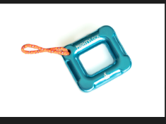
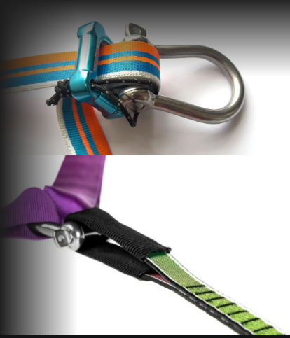
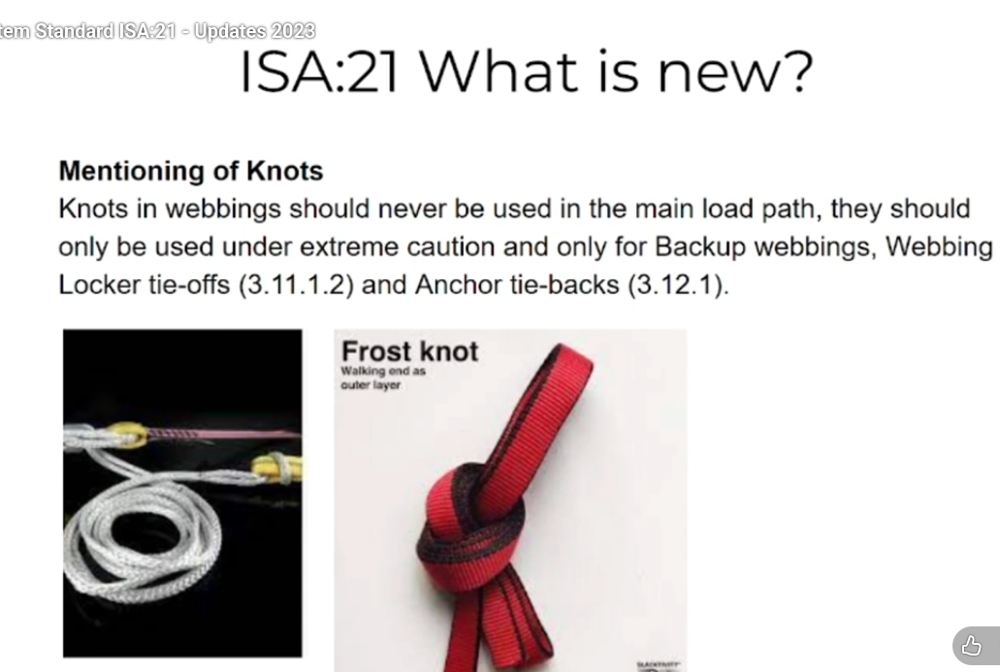
Les connecteurs sont des mécanismes ouvrables permettant aux pratiquants de se relier directement ou indirectement à un point d’ancrage ou d’associer des parties d’équipement entre elles.
Il est important d'utiliser correctement chaque connecteur en fonction des forces en jeu et de leur direction.
Les connecteurs recommandés pour un usage en highline au master-point sont les shackles (ou manilles) et les soft shackles.
Les manilles sont normalement en acier, bien qu’il en existe en aluminium chez certaines marques de Highline ; on utilise couramment ce qu’on appelle le « bow shackle » ou manilles lyres.
Les Soft Shackles ou manilles textiles sont faites d’un matériau textile de trés haute résistance comme le dyneema, l’amsteel ou un autre type de fibres UHMWPE.
Il n’existe pas de standard concernant la résistance minimale que doivent respecter les connecteurs, mais une bonne référence est le standard du weblock (48 kN MBS)
Il est important de toujours vérifier que le pin des shackles est complètement fermé.
Il n’est pas recommandé d’utiliser des mousquetons, quel qu’en soit le type, car ils ne sont pas conçus pour les charges triaxiales (tri-loading) ni pour la charge cyclique.

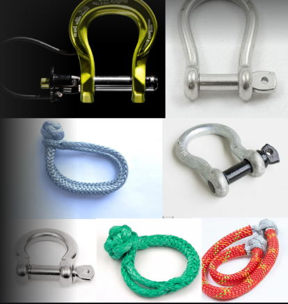
=> Voir ce document : Carabiners in slacklining T. Buckingham
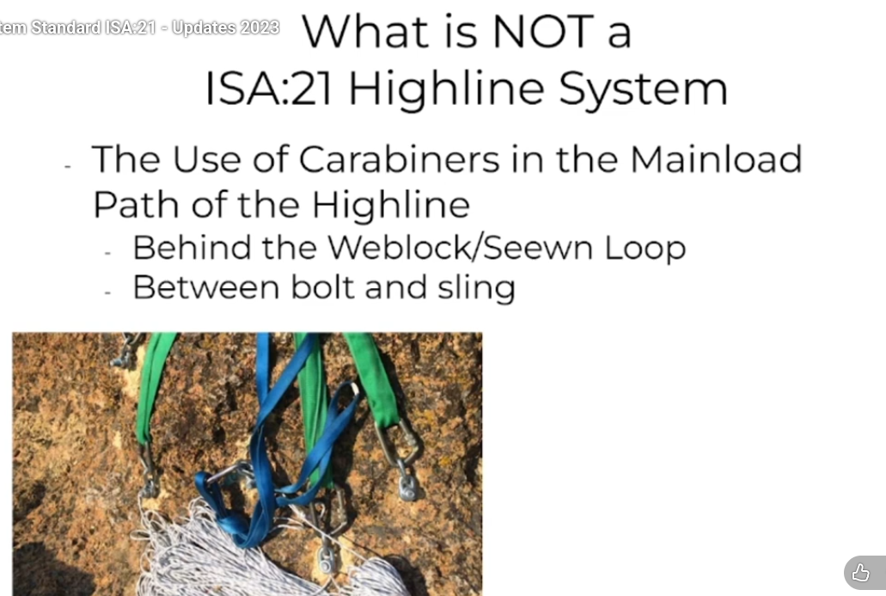
- Le Masterpoint n’est pas une pièce d’équipement en soi, mais l’une des parties les plus importantes du système.
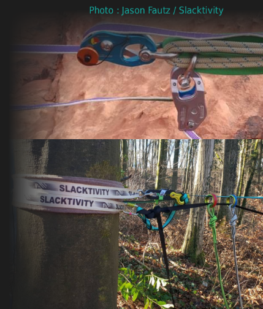
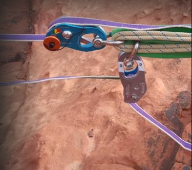
Labels ISA
Les sangles (webbing), les leashes et anneaux, et les weblocks sont les seuls composants du système à disposer d’un système d’étiquetage (labellisation) par l’ISA ; cette étiquette garantit que la pièce est adaptée à un usage en highline.
Pour obtenir cette étiquette, les fabricants financent un processus par lequel leur équipement est soumis à des essais dans un laboratoire indépendant, tant du fabricant que de l’ISA ; une fois que les résultats respectent les standards fixés par l’ISA, l’étiquette est attribuée à l’équipement que le fabricant cherche à certifier.
En complément de ce processus, l’ISA effectue un contrôle qualité continu au moyen d’essais réalisés par sa commission de sécurité.
« Sangle de détensionnement » ou soft release utilisée pour détendre les highlines sans avoir recours à un système de tension.
Elle fonctionne en enroulant une sangle avec une boucle cousue sur elle-même, fermée par un nœud et liée à deux manilles. Placer la boucle cousue du lasso côté manille pour éviter de dévisser le pin en détendant la highline. L’autre côté du lasso est placé sur la partie courbée de l’autre manille, ou directement sur le banana s’il possède deux goupilles. Pour détendre la ligne, il suffit de défaire le nœud de sécurité et de laisser glisser la sangle lentement entre les connecteurs en gardant le contrôle. Laisser se dérouler la sangle du lasso trop vite entraîne un échauffement qui peut l’endommager.
La longueur de la sangle utilisée comme lasso peut être comprise entre dix et quinze mètres, selon la longueur totale de la highline. Le lasso doit être formé par au moins cinq tours de sangle.
Le soft-release n’est pas mentionné dans le standard ISA 21 Highline System ce qui signifie qu’une installation de highline peut être valide et sûre sans utiliser ce composant.
Cependant, c’est une pièce très couramment utilisée car elle facilite grandement le processus de démontage / détente d’une sangle.
Le soft release doit être placé sur le mainline avec un connecteur supplémentaire entre l’ancrage et l’un des éléments de blocage principaux.
Le Soft-Release est généralement fabriqué a partir d’un tronçon de sangle avec une boucle cousue à une extremité. On tisse ce tronçon en générant plusieurs tours, La boucle cousue crée un côté fixe qui se connecte à l’un des connecteurs, tandis que le reste glisse sur un second connecteur, ce qui permet de libérer la tension de façon contrôlée, grâce à la friction de la sangle sur elle-même.
- Pour éviter que le soft-release ni se quand la sangle est en tension est important de toujours, TOUJOURS, TOUJOURS de faire un nœud antiglisse avec l’excédent du soft release.
- Une autre erreur fréquente dans l’usage du soft release est de placer le pin du shackle du côté qui glisse : si le soft release glisse dans le même sens que le pin du shackle, celui-ci peut finir par s’ouvrir et provoquer une défaillance du système pendant le démontage. (La recommandation est d’éviter de placer le pin du shackle du côté glissant)
Le Matériel d’Ancrage Principal (9) est l’élément qui reliera le masterpoint aux points ou structures d’ancrage ; ce sera généralement un matériau textile de haute résistance comme des cordes ou des spansets.
Le Matériel d’Ancrage Secondaire (12) est l’élément de réserve relié au masterpoint et aux points ou structures d’ancrage, prévu en cas de défaillance du matériel d’ancrage principal. Cela peut être des cordes, des spansets, des sangles ou des whoopies.
Les cordes sont un composant précieux pour la construction d’ancrages ; l’un de leurs principaux avantages est la possibilité de faire des nœuds pour les relier, répartir leurs charges et les connecter à différents composants.
Les cordes les plus couramment utilisées en highline sont les semi-statiques a partir de 9 mm, avec un MBS > 20 kN.
La sécurité de l’ancrage ne dépend pas de la résistance d’un seul brin de corde, mais se répartit sur plusieurs points et brins de corde, ce qui s’ajoute à la résistance réelle d’un ancrage, en visant au minimum une résistance supérieure à 48 KN.
Il est important de se rappeler que tout nœud diminue la résistance de la corde d’environ 50%.
Il n’existe pas de standard de l’ISA pour ce matériel ; cependant, à l’achat, il est bon de vérifier qu’il respecte d’autres certifications de matériel technique comme l’UIAA ou l’EN.
Elles sont utilisées aussi bien dans le système principal que secondaire.
Les spansets, ou sangles tubulaires, sont un matériau issu du secteur industriel du levage de charges leur avantage est leur grande résistance.
Les élingues utilisées en highline sont des élingues de levage correspondant à la norme EN 1492-2+A1. Elles ont une capacité de charge minimale d’une tonne, avec une charge de rupture de 7 tonnes.
ils sont constitués comme un anneau fermé par couture, avec à l’intérieur une âme en fibres de polyester et à l’extérieur une gaine tubulaire protectrice.
Leur construction les rend idéaux pour une utilisation autour d’arbres ou pour envelopper d’autres éléments comme des structures artificielles ou naturelles. Ils peuvent aussi servir à équilibrer des ancrages à plusieurs points.
Ils indiquent normalement leur WLL, et un facteur de sécurité qui, multiplié par le WLL, donne le MBS. ( coef 7 textile)
Les plus couramment utilisés en highline ont un WLL de 1000 kg (10 kN) en configuration verticale ; toujours se les procurer auprés d’un fournisseur fiable et vérifier que leur WLL est garanti par une certification industrielle.
Se rappeler que selon la configuration utilisée, leur WLL sera considéré différemment.
"Elingues en corde": Pour cela, est utilisée une corde semi statique de type A, normée EN 1891.
L’anneau de corde sera fermé par un nœud de jonction : un double pêcheur ou un huit de jonction.
- Outre les élingues et les cordes, il existe sur le marché de nombreux autres types de
Elles ont normalement une résistance moindre du fait de leur construction ; en règle générale, on n’utilisera aucune sangle avec un MBS inférieur à 25 KN.
JAMAIS ! nous n’utiliserons une sangle simple pour un ancrage de highline.
En général, nous ne construirons JAMAIS un ancrage de highline uniquement avec ce type de sangles, réservant leur usage à des cas très spécifiques dans le matériel d’ancrage secondaire
Leur principal inconvénient par rapport aux cordes et spansets est qu’elles est plus fragile face aux dommages par abrasion et coupure
Elles peuvent être utilisées indépendamment sur un système secondaire, en plaçant une sangle à chaque point.
Les Whoopies sont un type de sangle ajustable ; celles utilisées en highline sont généralement fabriquées avec une corde tressée à 12 brins en UHMWPE comme l’amsteel, le dyneema ou similaire.
Leur résistance dépend du diamètre de la corde avec laquelle elles sont construites.
En highline, on les utilise couramment dans le système d’ancrage secondaire lorsque l’ancrage est réparti sur plusieurs points : on utilise un whoopie indépendante pour chaque point, reliée au master-point.
Leur avantage est d’être très légères grâce à leur matériau et ajustables en raison de leur petit diamètre, il est important de prévoir des mesures spéciales pour les protéger de l’abrasion.
JAMAIS ! nous n’utiliserons une sangle simple pour un ancrage de highline
Les Mesures d’atténuation de l’abrasion (15) sont tous les éléments complémentaires utilisés pour protéger le système aux principaux points de friction et de frottement possibles.
Etant des éléments complémentaires, ils ne sont pas standardisés et peuvent comprendre une grande variété de matériaux ; en highline, on utilise généralement des matériaux textiles d’une certaine épaisseur et résistance, connus sous le nom de padding.
Tous les matériaux de notre système, indépendamment de leur résistance, doivent avoir une protection supplémentaire contre l’abrasion à leurs principaux points de friction
Protections de corde
Feutre ou textiles de forte épaisseur ou résistance
Tuyau de pompier
Sacs a dos
Matelas / Crash pads
Les Points d’ancrage sont les points où la charge du système de highline sera ancrée et répartie dans son intégralité ; en pratique, on peut les assimiler a des bolts ou goujons.
Les Structures d’ancrage sont tous les éléments, naturels ou construits, à partir desquels on peut générer 1 ou plusieurs points d’ancrage ; en pratique, on peut les assimiler à des arbres, des piliers ou d’autres structures qui nous permettent de nous ancrer.
Les ancrages naturels comprennent toutes les structures naturelles à partir desquelles on peut créer des points d’ancrage pour le highline sans avoir à y ajouter d’éléments.
Les plus couramment utilisés sont les arbres et les grandes structures rocheuses qui peuvent être contournées (ou les cages d’ascenceur en urbain).
Leur utilisation demande une observation prudente de l’élément ou des éléments que l’on souhaite utiliser par rapport à leur contexte ; il est donc recommandé de se faire conseiller par des personnes plus expérimentées si l’on n’a pas d’expérience.
Pour les arbres, il est important de considérer :
- L'espèce et l'épaisseur du tronc où l'on s'ancre (diamètre minimum recommandé 40 - L'état de santé de l'arbre - La profondeur estimée des racines - La position par rapport au bord du précipice.Pour les rochers, il est important de considérer : -La dureté et le poids estimé du rocher - Les fissures - L’appartenance à une structure plus grande du paysage (ce n’est pas un rocher isolé) - La position par rapport à la pente ou au bord du précipice.
Les ancrages artificiels comprennent toutes les structures à partirdesquelles on peut créer des points d’ancrage pour le highline, issues d’une intervention humaine.
Les ancrages artificiels les plus utilisés sont les bolts (ou goujons), mécaniques ou chimiques, posés dans une structure rocheuse et a partir desquels on construit des ancrages répartis sur plusieurs points.
Pour utiliser un bolt, il est important de considérer :
- Type de bolt selon la dureté de la roche : bolts mécaniques dans les roches très dures, ancrages //chimiques obligatoires dans les roches plus tendres. - Profondeur et diamétre du bolt. - Cônes d'expansion sur les bolts mécaniques (ceux-ci ne doivent pas être placés trop près l'un de l'autre) - Pose correcte dans une structure de roche solide et sans fissures (il peut y avoir des bolts mal posés, sur de petites structures rocheuses non consolidées, avec des fissures ou de petits blocs de roche) - Évaluation de leur état de corrosion. - Existence d'au moins 3 points d'ancrage pour un système de highline.Un composant important pour les ancrages artificiels, surtout ceux a plaquette ou de trés petit diamétre, ce sont les maillons rapides ou quicklinks.
En highline, on recommande d’utiliser au minimum ceux d’un diamètre de 8 mm, avec un MBS minimum de 25 kN (ce MBS augmentera selon le nombre de points d’ancrage existants).
On recommande d’utiliser ceux de forme ovale pour l’ancrage avec corde et les maillons delta pour les ancrages avec sangle (pour l’espace supplémentaire qu’ils offrent).
Il n’est pas recommandé d’utiliser des mousquetons comme connecteurs pour les ancrages, car ils ne sont pas conçus pour les charges cycliques. cf Carabiners in slacklining Thomas Buckingham
Il est très important de bien fermer la vis avant la mise en tension, même avec un outil, car la vibration peut les ouvrir.
Outre les bolts (goujons), un autre type d’ancrage artificiel que l’on peut trouver, surtout en milieu urbain, ce sont des structures construites comme des poteaux, piliers, poutres ou autres éléments d’une construction.
En décidant d’utiliser ce type de structures, nous devrons également évaluer leur état physique, leurs dimensions, la qualité de leurs fondations et leur appartenance a une structure plus grande.
En général, si l’on a la possibilité de s’ancrer à des éléments structurels de grandes constructions, ils seront sûrs, mais ce ne sera pas pareil pour de petites constructions.
En général, l’évaluation et la pose d’ancrages pour la highline est un sujet d’une grande complexité, dont nous n’avons vu qu’une petite approche
- Les Structures de renvoi (14) sont tous les éléments qui nous servent à dévier la direction de notre ancrage, que ce soit pour le mettre à niveau, éviter l’obstruction d’autres éléments de l’environnement ou limiter le contact des matériaux avec la roche ou le sol.
Les structures de renvoi peuvent être naturelles ou artificielles.
Les naturelles peuvent être des arbres ou des rochers que l’on utilise aussi pour changer la direction de notre ancrage
Les artificielles vont de morceaux de troncs de grand diamètre posés sur le sol qui soulèvent l’ancrage, à des solutions plus spécialisées comme les a-frame, hang-frame, x-frame, etc. Ce peuvent aussi étre des éléments existantsnd’une structure.
Les plus couramment utilisés en highline sont : O
- Pour toute structure de renvoi, il est important de prévoir des mesures pour la stabiliser et éviter sa chute.
Un autre principe important à retenir est la chaîne de résistance. Nous chercherons à ce que chaque composant de notre système voie sa résistance augmenter en allant vers le centre.
Le leash étant le composant le plus faible du système, puis la sangle, ensuite l’élément de blocage, pour finir avec la plus grande résistance dans notre matériel d’ancrage.
Selon cette notion, nous veillerons à ne jamais avoir de matériel d’ancrage dont la résistance combinée soit inférieure aux 48 KN que doit au minimum supporter un weblock.
Résistance
Résistance 8 + Résistance
C’est un type d’ancrage avec triangulation des forces ; son principal avantage réside dans sa possibilité de s’équilibrer de façon semi-automatique, bien que limitée par la friction.
Son principal inconvénient est qu’il n’est pas redondant en lui-même et, en cas de défaillance, il génère de l’extension ; il nécessitera donc TOUJOURS un systéme de redondance supplémentaire.
Il est recommandé de l’utiliser pour des ancrages positionnés verticalement ou à différents niveaux, car un autre type de triangulation comme le BFK ne s’équilibrera pas correctement dans ce cas.
Pour le système de backup, il est important que ce ne soit pas un autre sliding-x, car cela ne limitera pas l’extension en cas de défaillance d’un ancrage. ( sauf 2x2 Cf. conference ISA “slidingx ou BFK”)
Pour le système de backup, on peut utiliser un BFK, ou un système de sangles indépendantes, comme des whoopies ou d’autres types de sangles.
Tous les points du Sliding X, ainsi que les points du système de backup, devront être connectés aux deux connecteurs, principal et secondaire, formant ainsi le master-point.
C’est un type d’ancrage avec triangulation des forces ; son principal avantage est d’ être redondant et non extensible en lui-méme, ce qui ne demande donc pas de systéme de secours.
Son principal inconvénient est qu’il est difficile d’obtenir un équilibrage régulier entre chaque point de l’ancrage, et cet équilibrage sera totalement perdu si l’un des points cède.
- Dans la boucle du nœud se formera un master point ; c’est dans cette boucle que nous relierons les connecteurs des systémes principal et secondaire.
Dans ce type d’ancrage, on dépend d’un seul point d’ancrage, qui peut être un arbre très solide, un pilier d’une structure ou un autre objet similaire.
Comme dans ce type d’ancrage notre vie dépend de la résistance d’un seul élément, nous ne le ferons que dans les cas où nous sommes sûrs à 100 % de la résistance et de la stabilité de l’élément auquel nous nous ancrons.
Il consiste à enlacer l’élément avec deux sangles indépendantes (principale et secondaire), généralement en configuration « panier », bien que d’autres configurations soientnpossibles. Une fois posées, on relie les deux sangles aux deux connecteurs (principal et secondaire) pour créer le master-point.
Comme nous ne chargeons qu’une seule sangle dans notre système principal, nous veillerons à ce que sa résistance minimale soit de 50 kN (MBS), pour qu’elle ne soit pas moins résistante que le reste du système.
- Baudrier
- Systéme d’ancrage personnel (PAS)
- Poulies de sangle (Line Slides)
Source : Slackline International (ISA)
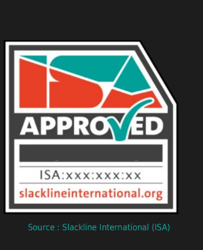
Libérateur de tension (Lasso ou Soft-Release)
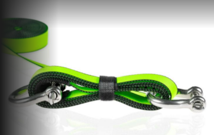
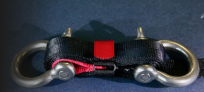
Matériel d’ancrage (Cordes, Spansets, Sangles, Whoopies)
Les cordes
Les Elingues (spanset)
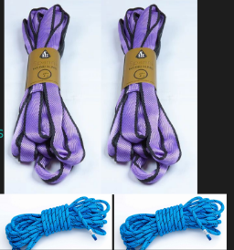
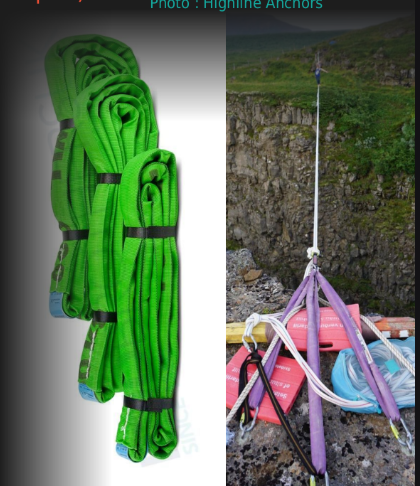
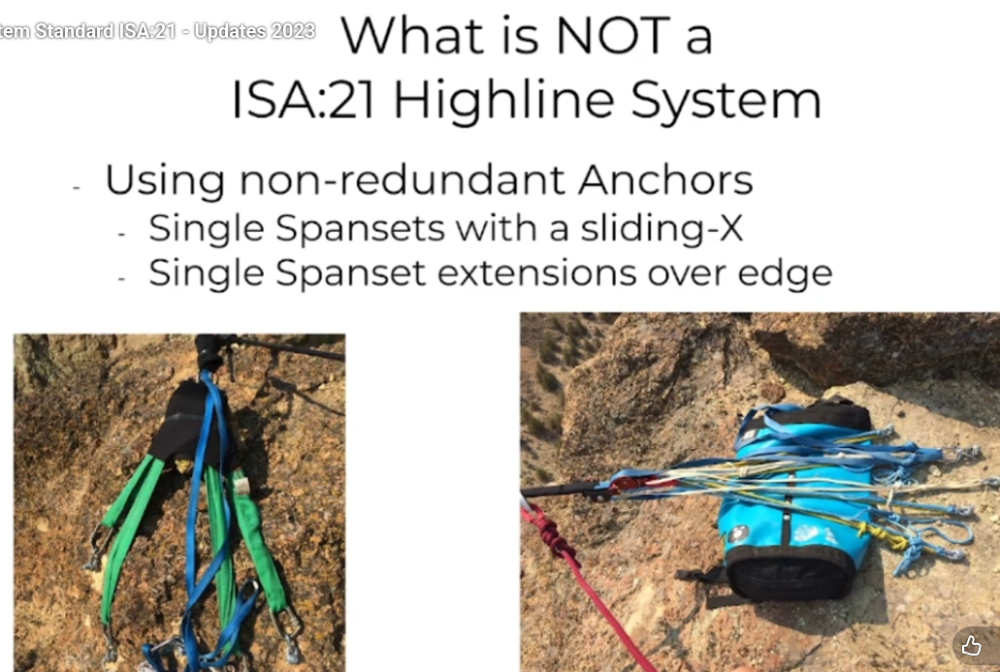
sangles, issues d’activités sportives comme l’escalade ou la slackline.
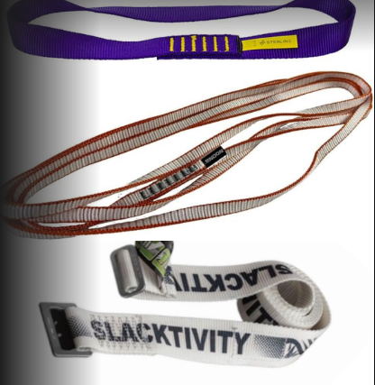
Les Whoopies
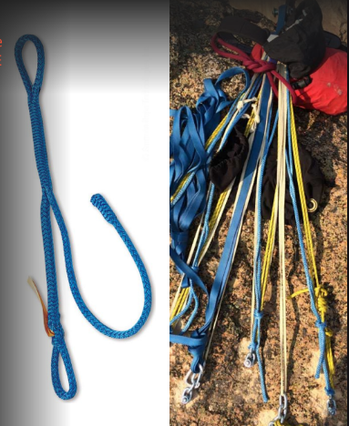

Nous ne construirons JAMAIS un ancrage de highline uniquement avec ce type de sangles, réservant leur usage à des cas très spécifiques dans le matériel d’ancrage secondaire.
Protections contre l’abrasion (Padding)
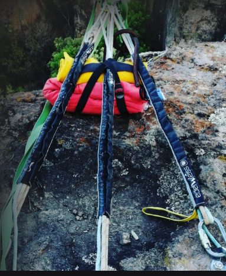
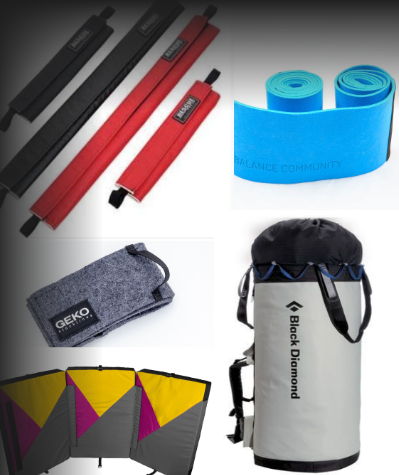
15 Abration Mitigation Mesaures (Padding, Mesures d’atténuation de l’abrasion)
Quelques exemples de matériaux pouvant être utilisés :
Points et structures d’ancrage (Ancrages naturels et artificiels)
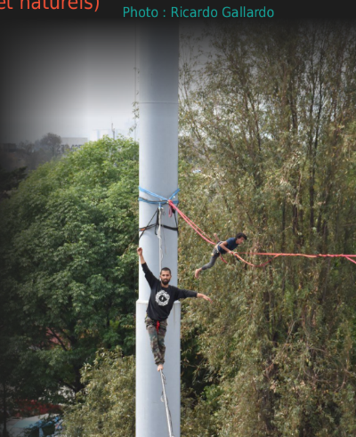
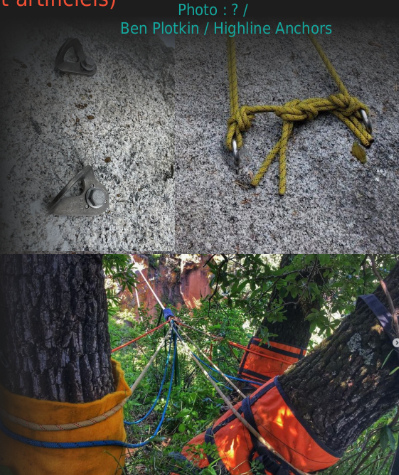
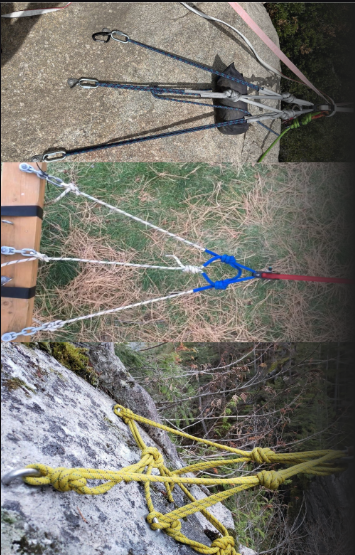
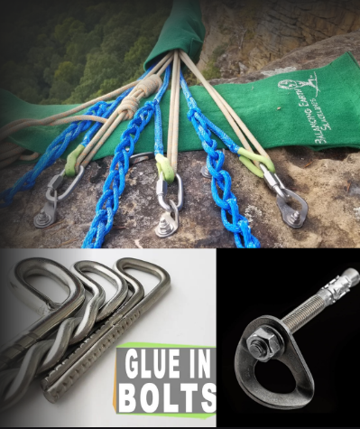
maillons rapides
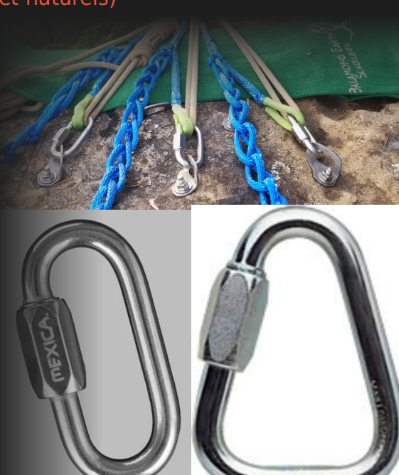
Il est important, avant de réaliser un rig par nous-mémes, de nous faire accompagner et d’apprendre auprès de personnes ayant une bonne expérience qui nous aident à mieux comprendre ces sujets.
Structures de renvoi et déviations
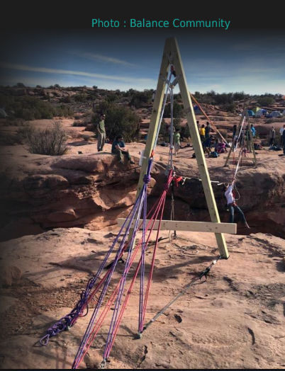
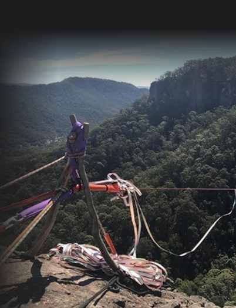
Méthodes de base de construction des ancrages
Répartition des charges, triangulation et équilibrage
Pour construire des ancrages en highline, voici les trois principes de base à comprendre afin d’utiliser
efficacement nos matériaux et d’optimiser leur résistance.
Répartition des charges :
En général, nous chercherons a répartir la charge de nos ancrages pour obtenir un grand facteur de sécurité ; il y a deux grandes stratégies : l’une consiste à diviser la charge totale entre différents points d’ancrage, l’autre à utiliser plusieurs couches du même matériau pour répartir la charge. Par exemple, en utilisant plus d’un brin de corde, on ajoute à la résistance totale de notre système : si la corde simple casse à 20 KN, avec deux brins on approchera 40 KN, avec trois 60 kN, et ainsi de suite
Triangulation :
La triangulation est en soi une stratégie que nous utilisons pour répartir les charges :
en divisant une charge linéaire entre deux points d’ancrage ou plus, nous chercherons a ce que le total de la charge soit divisé entre ceux-ci, en plaçant ainsi une fraction de la charge sur chaque point d’ancrage et donc sur chaque pièce d’équipement ou structure constituant ce point.
ATTENTION ! II est important de rappeler que pour que cette répartition soit efficace, nous chercherons à avoir des angles réduits entre chaque ligne du triangle, sinon nous multiplierons la force. Idéalement, nous chercherons à avoir moins de 30° ; 45° est une limite acceptable et nous ne devons jamais dépasser 60°.
Equilibrage :
L’équilibrage se réfère à la distribution équitable des charges entre chacun des vecteurs et points d’ancrage. La répartition théorique des charges de la triangulation ne sera pas efficace si, lors de la construction d’un ancrage, l’une de nos cordes reste plus lâche que les autres au moment de recevoir la tension. Pour un équilibrage efficace, il faut calculer une longueur correcte pour chaque ligne de l’ancrage avant de la soumettre à la tension.
L’importance du master point.
Rappelons que l’un des principes d’évaluation d’un système de highline est la redondance.
Le master point est l’un des points les plus importants du systéme, car il relie la redondance de notre matériel d’ancrage avec la redondance de nos éléments de blocage.
Pendant de nombreuses années, il a été pratique courante pour un secteur de highliners, même professionnels, de réaliser des backups complètement indépendants du système principal, où le matériel d’ancrage et les bloqueurs du backup sont séparés aux ancrages ;
Cela crée un problème facilement évitable avec le master-point.
Le problème principal est que lorsqu’une partie de notre système principal cède, notre système secondaire est entièrement sollicité, perdant toutes ces couches de redondance
Ce que le master point nous offre. Par exemple, dans un système indépendant, si la ligne principale cède, nous nous retrouverons directement sur la ligne et le matériel d’ancrage secondaires, rendant inutile le matériel d’ancrage principal ; d’autre part, si notre ancrage principal céde, nous nous retrouverons directement sur la ligne secondaire, perdant ainsi la redondance que nous avions sur cet élément.
La chaîne de résistance
Sliding-X
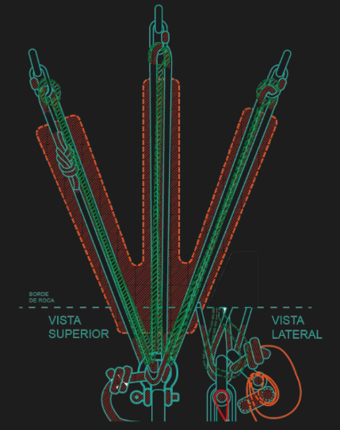
BFK (Big « Friendly » Knot)
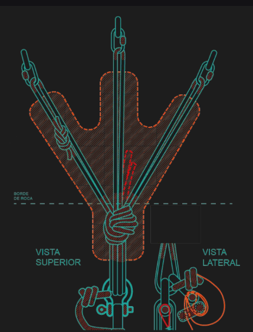
-Il est recommandé de l’utiliser pour des ancrages positionnés horizontalement ou sans grandes différences de niveau ; sinon, certains points seront plus chargés lors de l’usage dynamique du highline.
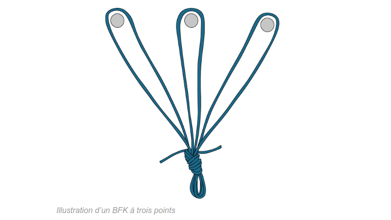
Vidéo short: Sliding X or BFK ?
Conférence ISA SlidinX ou BFK?
Ancrage simple avec sangles ou élingue.
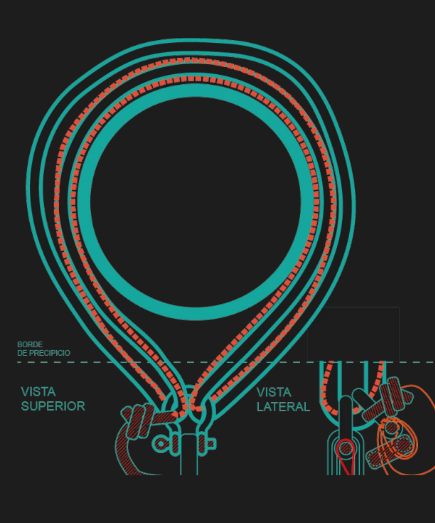
Autres matos: EPI et rigging
Baudrier
L’une des parties les plus importantes en matiére de sécurité pour ce type de baudrier dans notre pratique est l’existence des deux points d’encordement, ou pontets.
Systèmes d’ancrage personnel (PAS)
Le système d’ancrage personnel se compose de deux éléments principaux :
- Longe d'ancrage **en corde dynamique**
- Mousqueton de sécurité.- Grâce à ces deux éléments, aux points d’ancrage, aux points
d’ancrage auxiliaires et au système de highline lui-même, nous
resterons en sécurité pendant que nous travaillons à l’installation.
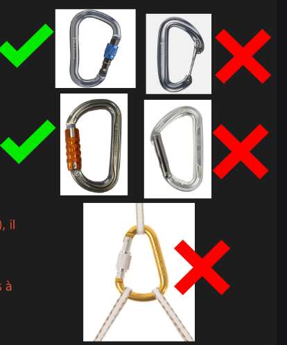
Toujours se sécuriser sur des cordes ou systèmes indépendants pour les opérations de rigging et derriging pour éviter les erreurs humaines!
Notamment au moment du démontage où l’on démonte des éléments cruciaux pour la sécurité de nos partenaires si ceux si y sont sécurisés et ou la communication est parfois complexe. A minima se longer dans le système de backup et démonter celui ci en dernier en s’assurant que personne ne s’y sécurise avant toute opération de démontage !
Pour accéder à une ligne déjà installée, il faut disposer d’au moins un point (c’est-à-dire une longe plus un mousqueton)
Pour le processus de rigging, on encourage à disposer au minimum d’un système à deux longes, et en général c’est une bonne pratique pour ce type d’activités d’avoir cette redondance et permettre le déplacement.
- LA LONGE D’ANCRAGE
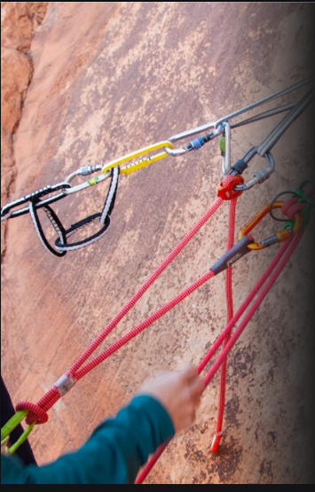
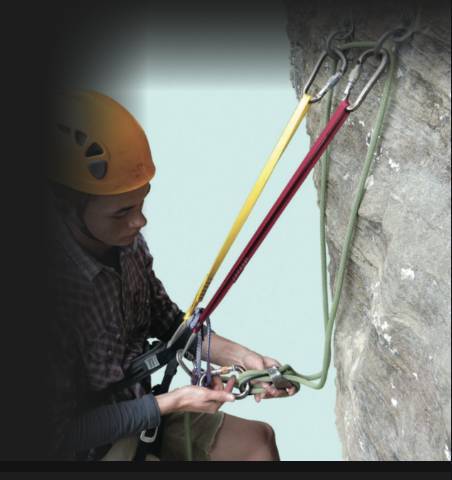
Elles sont généralement fabriquées en sangle de nylon ou en corde dynamique, avec des coutures certifiées par le fabricant.
Il en existe de plusieurs types sur le marché : ajustables, semi-ajustables, non ajustables.
Selon la recommandation du fabricant, elle se place sur les deux points d’encordement ou sur l’anneau ventral.
Nous chercherons celles qui respectent une certification EN ou UIAA
IL n’est pas recommandé d’utiliser de « daisy chain » : c’est une sangle cousue sur elle-méme, concue pour un autre usage ; les coutures n’ont pas la méme résistance que la sangle et, en se connectant a deux de ses boucles en méme temps, cela peut provoquer un accident fatal.
ATTENTION En cas d’utilisation d’une sangle en dyneema comme longe il est tres important de rester toujours en tension dans sa longe et de ne jamais se trouver en facteur de chute. La moindre chute engendrerai alors des forces pouvant rompre la longe ou casser votre dos ou endommager votre ancrage. NOUS NE RECOMMANDONS PAS LEUR UTILISATION POUR CET USAGE. Préférer un bout de corde dynamique de diametre 9mm minimum.
Malgré leur grande résistance, les longes d’ancrage ne sont pas conçues pour absorber des chutes, en raison de leur faible longueur et parce qu’elles sont statiques
De plus, faire une chute pendant le rigging, même en étant ancré, pourrait entrainer un choc violent contre la roche qui pourrait nous mettre en danger.
C’est pourquoi l’usage correct des longes d’ancrage consiste idéalement a les ancrer au-dessus de notre hanche, et sous tension, afin de pouvoir nous « suspendre » à elles et nous positionner correctement pour travailler.
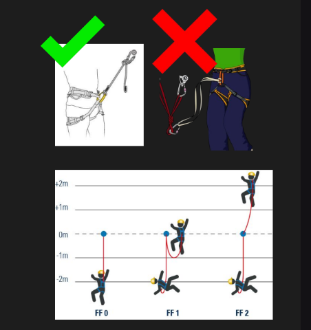
- LE MOUSQUETON DE SÉCURITÉ
- Pour le mousqueton faisant partie de notre système d’ancrage
personnel, il est déterminant que ce soit un mousqueton à verrouillage (automatique ou à vis)
De même, nous chercherons qu’il soit homologué EN et UIAA, avec une résistance minimale fermé de 25 kN (MBS)
Il existe de nombreux types de verrouillage sur le marché : vis, automatique a double action, triple action, magnétique ; tous nous conviendront tant qu’ils disposent de ce système de blocage.
En utilisant un mousqueton à verrouillage non automatique (à vis), il faudra toujours veiller à le fermer ; oublier de le faire est une erreur courante.
Il est également important de ne pas soumettre nos mousquetons à des charges triaxiales et de les positioner correctement nottament contre un rocher , ouverture vers soit et non vers le rocher.
- POULIES DE SANGLE
La poulie de sangle n’est pas un élément de protection personnelle que nous utiliserons pendant le processus de rigging.
Cependant, c’est un élément important parmi les composants individuels de sécurité personnelle en highline, car nous l’utiliserons pour accéder à la sangle, nous y déplacer ou effectuer une manœuvre sur la sangle comme un sauvetage ou un auto-sauvetage.
Ce sont essentiellement des poulies pour sangle, intégrées ou non à un mousqueton ; les plus courantes et fonctionnelles sont le Hangover (Slacktivity), le Rollex (Equilibrium) et le Roller (Balance Community)
Il en existe avec et sans verrouillage ; on peut utiliser n’importe lesquelles, en se rappelant que nous devons toujours être ancrés à la sangle avec le leash ou avec deux longes d’ancrage pour toute autre manœuvre (JAMAIS POUR SLACKER, on slack avec un leash dans ses deux pontets et des anneaux, rien d’autre).
Il peut etre tres utile de les verouiller avec un bout de sangle tubulaire pour empecher de mauvaises surprises lors de la pratique du freestyle en particulier !!
Nous veillerons à ce qu’elles proviennent d’un fabricant fiable, respectent les recommandations de l’ISA et disposent d’une certification UIAA ou EN.
Le rigging compris comme un processus
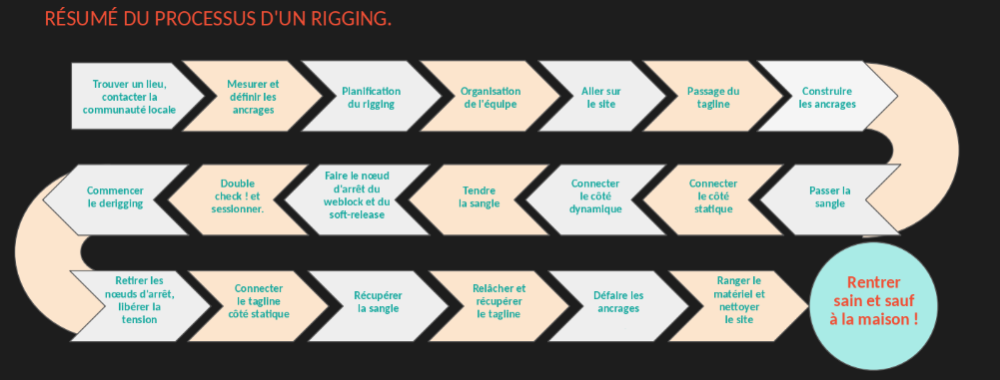
Comme nous l’avons vu, le highline peut être compris comme un système
le Rigging peut alors être compris comme le processus par lequel nous réalisons le montage et le démontage de ce système.
Le rigging en lui-même est l’action, sur le site, de montage et de démontage de la sangle.
Cependant, pour comprendre plus profondément ce que cela implique dans notre activité, il faut considérer l’avant et l’après du processus qui le rendent possible.
Des choses comme la planification, l’organisation préalable et la préparation de l’équipe, la communication, les protocoles d’urgence, ainsi que le retour d’expérience aprés une mission de highline, feront toutes la différence entre un processus de rigging semé de difficultés et un processus où tout se déroule bien.
Repérage du lieu (Scouting)
En général, quand on débute, on se rend sur des sites déjà développés pour la highline ; dans ce cas, il est important de se rapprocher des communautés locales du sport et de se renseigner sur le topo, l'approche, les autorisations necessaires et personnes à contacter ou convention existante.
Quand on cherche un nouveau lieu, on peut commencer par le repérer,utiliser un laser des cartes ou des outils en lignes qui aideront à reconnaître le terrain dans les grandes lignes et même à mesurer ; on fait des recherches pour comprendre le climat et règles existantes du lieu.
Il est également très important de comprendre les restrictions ou limitations d’accés au lieu et de respecter ceux qui l’habitent (aussi la faune et la flore!) , et de ne pas aborder un endroit d’une manière qui posera des problèmes avec le autorités
Ensuite, chaque fois que c’est possible, nous irons sur le site pour faire des repèrages plus précis l’aide d’outils comme le « télémètre », nous mesurerons la distance possible. Ainsi, nous aurons une idée de la quantité de matériel nécessaire et on peut réaliser un plan de rigging